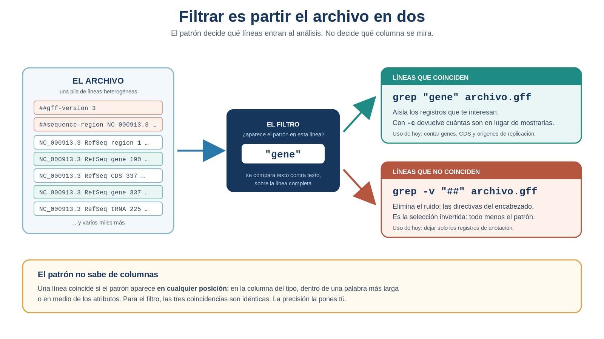
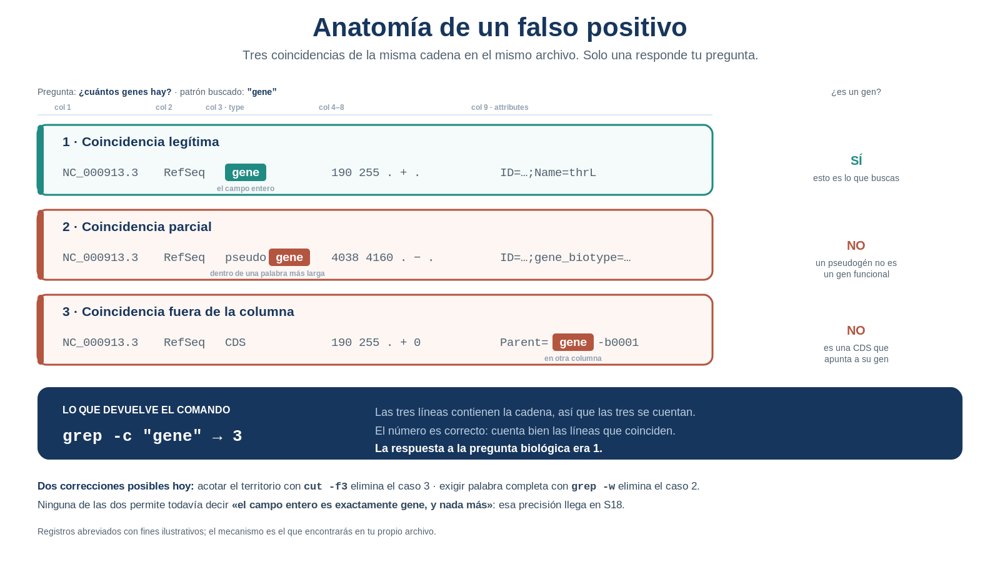

S12 — Filtrar y contar: primeras preguntas sobre el genoma
Antes de clase leerás las secciones marcadas como indispensables y harás un primer intento: predecir cuántos genes tiene tu genoma y escribir, con lo que ya sabes hacer, la estrategia con la que los contarías. Durante el taller obtendrás tus primeros números defendibles sobre la anotación —y descubrirás, en tu propio archivo, que el primero de ellos estaba inflado—. Después integrarás todo en doc/protocolo.md, incluyendo por primera vez un apartado de Limitaciones de la estrategia. El primer intento es formativo: importa el razonamiento, no el acierto.
Ficha del módulo
| Elemento | Descripción |
|---|---|
| Sesión | S12, 2 horas |
| Unidad | U4. Procesamiento y exploración de datos genómicos |
| Competencia principal | D. Análisis y exploración de datos genómicos |
| Competencias integradas | A. Documentación reproducible; B. Entorno Unix; C. Manejo de datos biológicos |
| Propósito | Convertir el archivo completo en el subconjunto pertinente a una pregunta, obtener los primeros conteos defendibles y aprender a auditarlos: un número puede ser correcto y aun así responder otra pregunta |
| Consulta previa del Plan | Material clásico L6-filtros y L7-filtros; este módulo los sustituye como lectura autocontenida |
| Lectura indispensable | Secciones 1–9 de este módulo (~45 min) |
| Lectura de consulta | Buffalo (2015), Cap. 7; manual de grep; ProfeUnix Bioinfo |
| Primer intento | Práctica 1: predecir el conteo y diseñar la estrategia, 20–25 min, sin abrir archivos |
| Evidencia | Conteos de genes, CDS y orígenes de replicación con su auditoría; medición directa del tamaño del genoma; apartado Limitaciones de la estrategia en el protocolo |
| Tarea numerada | Ninguna nueva. La evidencia de esta sesión alimenta el protocolo y el proyecto integrador |
Relación con lo que ya sabes
S11 S12
Localizar la información → Decidir qué información entra
"el archivo tiene columnas" "no todas las líneas responden mi pregunta"En S11 descubriste que el GFF3 es una tabla y aprendiste a quedarte con la columna que responde cada pregunta. Pero al mirar el principio de tus extracciones te encontraste con directivas ## intactas: cut corta todas las líneas por igual, porque nada distingue todavía una línea de datos de una de comentario.
Hoy resuelves esa limitación, y con ella tres preguntas que quedaron provisionales.
| Habilidad que ya tienes | Dónde la aprendiste | Qué cambia en S12 |
|---|---|---|
Extraer una columna con cut |
S11 | Ahora la extraes después de decidir qué líneas entran |
Medir con wc -l y wc -c |
S10 | Mides subconjuntos que tú construiste, no el archivo completo |
Encadenar con pipes y guardar con > |
S10 | Las tuberías se alargan: seleccionar → recortar → contar |
| Distinguir el dato de la operación | S11, Práctica 1 | Aparece una tercera cosa: el criterio que decide qué registros son pertinentes |
| Declarar una respuesta como provisional | S11, Práctica 4 | Hoy no basta con declararlo: hay que cuantificar cuánto se equivoca |
Lo nuevo de hoy son dos ideas, y la segunda importa más que la primera. La primera: se puede seleccionar líneas por su contenido. La segunda: seleccionar mal no produce ningún error, produce un número plausible que responde una pregunta distinta de la que hiciste.
Dónde estás en la investigación
| Pregunta de la investigación | En S12 |
|---|---|
| ¿Cómo está organizado por dentro un archivo biológico? | ✔ Resuelta en S10–S11 |
| ¿Qué información codifica cada campo de la anotación? | ✔ Resuelta en S11 |
| ¿De qué tamaño es el genoma? | ✔ Tercera respuesta hoy: medición directa de bases, no estimación |
| ¿Cuántos genes existen? | ✔ Primera respuesta cuantitativa hoy (se refinará en S18 y S22) |
| ¿Cuántas CDS existen? | ✔ Primera respuesta cuantitativa hoy (se refinará en S18 y S22) |
| ¿Cuántos orígenes de replicación están anotados? | ✔ Se trabaja hoy (respuesta condicionada al vocabulario del archivo) |
| ¿Cuántos cromosomas o replicones tiene? | ☐ Provisional desde S11; se resuelve en S13 |
| ¿Qué tipos de features contiene la anotación? | ☐ Hoy solo puedes preguntar por los que se te ocurran; se resuelve en S13 |
| ¿Cuántos genes existen por cadena? | ☐ S18 y S22 |
| ¿Cómo organizar la información para responder nuevas preguntas? | ☐ S20–S23 |
Hoy es la primera vez que escribes números sobre tu genoma que puedes defender ante otra persona. También es la primera vez que tienes que auditarlos tú mismo antes de escribirlos.
Resultados de aprendizaje
Al finalizar la sesión podrás:
- Explicar qué es un patrón y qué cuenta como coincidencia en una búsqueda literal.
- Seleccionar las líneas pertinentes a una pregunta y excluir las que no lo son.
- Cuantificar cuánto ruido aportaban los comentarios a las mediciones de S10.
- Obtener un conteo de genes, de CDS y de orígenes de replicación con su comando exacto.
- Detectar en tu propio archivo al menos un falso positivo y explicar el mecanismo que lo produjo.
- Corregir un conteo acotando la búsqueda a la columna pertinente y a la palabra completa, y cuantificar la diferencia entre el conteo bruto y el corregido.
- Medir el tamaño del genoma en bases reales y contrastarlo con la longitud declarada y con la estimación de S11.
- Documentar las limitaciones de una estrategia de conteo, distinguiendo lo que el número afirma de lo que no puede afirmar.
Lista de verificación previa
Antes de comenzar confirma:
Ruta de S12
| Momento | Actividad | Producto | Tiempo estimado |
|---|---|---|---|
| Antes de clase | Leer secciones 1–9 | Notas y dudas | 40–50 min |
| Antes de clase | Práctica 1: predicción y estrategia | Predicción razonada + pseudocódigo | 20–25 min |
| Taller | Retomar S11 y contrastar predicciones | Punto de partida compartido | 10 min |
| Taller | Práctica 2: cuántos registros hay realmente | Conteo limpio + ruido cuantificado | 20 min |
| Taller | Práctica 3: los primeros conteos | Tres números en results/s12/ |
20 min |
| Taller | Práctica 4: auditar el conteo | Falso positivo detectado + tabla de la diferencia | 35 min |
| Taller | Práctica 5: medir el genoma | Bases reales contrastadas con dos fuentes | 20 min |
| Taller | Cierre e interpretación | Bloque S12 del protocolo | 15 min |
| Después | Completar el protocolo con sus limitaciones | Protocolo actualizado | 45–60 min |
1. La limitación que dejó S11 [Indispensable]
Al final de S11 tenías una columna extraída y este problema delante:
##gff-version 3
##sequence-region NC_000913.3 1 4641652
#!genome-build-accession NCBI_Assembly:GCF_000005845.2
region
gene
CDS
gene
...Sabías qué columna mirar. No sabías qué líneas dejar entrar.
Y no era solo cuestión de comentarios. Aunque los quitaras, esa columna mezcla todos los tipos de feature del archivo cuando tu pregunta apunta a uno solo. Contar lo que hay ahí no responde “¿cuántos genes hay?”: responde “¿cuántos registros de cualquier clase hay?”.
Falta una operación que S11 no podía darte: decidir, línea por línea, si esa línea pertenece o no al conjunto que responde tu pregunta.
Hasta ahora tu análisis tenía dos piezas: el dato (qué información necesito) y la operación (qué hago con ella). Hoy aparece una tercera, previa a las dos: el criterio de pertinencia —qué registros forman parte del análisis y cuáles no—. Un criterio mal elegido no rompe nada: produce un número perfectamente válido que responde otra pregunta.
2. Decidir qué entra al análisis: filtrar por patrón [Indispensable]
2.1 Patrón y coincidencia
Un patrón es una descripción de lo que estás buscando. En su forma más simple —la única que usas hoy— es una cadena de texto literal: gene, CDS, ##.
Una línea coincide con el patrón cuando el patrón aparece en algún lugar de la línea. Esta frase es la más importante de la sesión, y conviene leerla dos veces: en algún lugar. No “al principio”, no “como palabra completa”, no “en la columna 3”. En algún lugar.
Considera este registro real:
NC_000913.3 RefSeq gene 190 255 . + . ID=gene-b0001;Name=thrL;locus_tag=b0001La cadena gene aparece dos veces: una en la columna 3, que es la que te interesa, y otra dentro de ID=gene-b0001, en la columna de atributos, que no te interesa en absoluto. Para el filtro, las dos son idénticas: la línea coincide y punto.
Filtrar es partir un archivo en dos: las líneas que coinciden y las que no. Con esa operación puedes hacer dos cosas simétricas y complementarias:
- quedarte con las que coinciden —aislar los registros de un tipo—;
- quedarte con las que no coinciden —eliminar el ruido, como los comentarios—.
La segunda es la que resuelve el problema que arrastras desde S11.
2.2 La herramienta
Sintaxis mínima — grep
grep "gene" data/source/genomic.gff¿Qué hace? Muestra únicamente las líneas del archivo en las que aparece el patrón indicado.
¿Por qué aparece en esta sesión? Porque en S11 descubriste que cut decide qué columna mirar pero no qué líneas entran al análisis. grep es exactamente esa decisión.
🤖 Prompt para ProfeUnix Bioinfo: > Explícame el comando grep y sus opciones -c, -v, -i, -w y -n con ejemplos sobre un > archivo GFF3. ¿Qué devuelve grep cuando no encuentra ninguna coincidencia?
Sintaxis mínima — grep -c
grep -c "gene" data/source/genomic.gff¿Qué hace? En lugar de mostrar las líneas, cuenta cuántas coinciden.
¿Por qué aparece en esta sesión? Porque tus preguntas de hoy son preguntas de cuántos, y grep -c responde en un paso lo que necesitarías dos para obtener (grep … | wc -l).
Sintaxis mínima — grep -v
grep -v "##" data/source/genomic.gff¿Qué hace? Invierte la selección: muestra las líneas que no contienen el patrón.
¿Por qué aparece en esta sesión? Porque el primer estorbo de tu análisis no es lo que falta, es lo que sobra: las directivas del encabezado contaminan toda extracción desde S11.

Figura 1. Filtrar es partir el archivo en dos. grep conserva las líneas que coinciden; grep -v conserva las que no. La coincidencia se evalúa sobre la línea completa, no sobre una columna. Elaboración propia.
grep no conoce el formato GFF3. No sabe que la tercera columna es el tipo de feature ni que la novena son atributos. Solo compara texto contra texto sobre la línea entera. Toda la precisión que tu conteo tenga tendrás que ponerla tú.
Práctica 1 — ¿Cuántos genes esperas encontrar? (antes de clase, primer intento)
Pregunta biológica. ¿Cuántos genes tiene tu genoma, y cómo los contarías con lo que sabes hacer hoy?
Objetivo. Comprometerte con una predicción antes de tener el número, y escribir la estrategia que usarías. Predecir obliga a razonar sobre el organismo; escribir la estrategia obliga a hacer explícitos supuestos que de otro modo pasan inadvertidos.
Antes de clase (primer intento). En doc/s12-primer-intento.md:
Predice. ¿Cuántos genes esperas que tenga tu genoma? Da un número o un rango, y justifícalo con lo que sabes del organismo: su tamaño (S11), su grupo taxonómico, lo que documentaste en U3. No consultes el archivo ni internet: se evalúa el razonamiento.
Estima la densidad. Divide el tamaño del genoma que estimaste en S11 entre tu predicción de genes. ¿Cuántas bases por gen te sale? ¿Es una cifra razonable para un gen? Si no lo es, corrige la predicción y anota que la corregiste.
Diseña. Escribe en pseudocódigo —en español, no en Unix— los pasos que darías para contar los genes de tu GFF3. Por ejemplo: “primero quitaría X, luego me quedaría con Y, después contaría Z”. No importa que no conozcas los comandos.
Anticipa el error. Tu estrategia va a fallar de alguna manera. Escribe al menos tres razones por las que el número que obtengas podría no ser el número de genes del organismo. Piensa en el archivo, no en el comando.
Durante el taller. Contrastarás tu predicción con el número que obtengas, y tu lista de “razones por las que podría fallar” con los fallos que realmente encuentres. Anotarás cuáles anticipaste y cuáles no se te habían ocurrido.
Después del taller. La predicción y su contraste se integran al protocolo (Sección 9).
Criterio de logro: tu predicción está justificada biológicamente, tu estrategia distingue selección de conteo, y anticipas al menos tres fuentes de error sin haber ejecutado nada.
3. Quitar el ruido antes de contar [Indispensable]
Empieza por lo que sobra. En S10 mediste tu GFF3 con wc -l y anotaste que el número sobreestimaba las anotaciones, porque incluía las líneas de comentario. Hoy puedes quitarlas y cuantificar exactamente cuánto sobraba.
Las líneas que no son datos en un GFF3 empiezan con #. Dentro de ellas hay dos clases, y la distinción va a importar:
| Clase | Aspecto | Qué es |
|---|---|---|
| Directivas | ##gff-version 3, ##sequence-region … |
Instrucciones del formato, definidas por la especificación GFF3 |
| Comentarios del productor | #!genome-build-accession … |
Notas que añade quien generó el archivo; no son parte del estándar |
Para eliminar las directivas, el patrón es ##:
grep -v "##" data/source/<tu_archivo>.gff | wc -lLéelo como una frase: toma el archivo, descarta las líneas que contengan ##, y cuenta las que quedan.
Antes de encadenar nada, ejecuta el filtro solo y mira su salida con head. Es la regla de verificación de S10: se comprueba en pequeño antes de aplicar al archivo completo. Un filtro que descarta más de lo que crees es indistinguible de uno correcto si solo miras el número final.
Y aquí viene la primera trampa del día, que vas a encontrar tú mismo en la Práctica 2: ## no elimina todas las líneas de comentario. Las que empiezan con #! llevan un solo #, así que sobreviven al filtro. El número que obtengas será mejor que el de S10, pero todavía no será exacto —y lo interesante es que puedes demostrarlo.
Práctica 2 — ¿Cuántos registros de anotación hay realmente? (durante el taller)
Pregunta biológica. ¿Cuántas anotaciones contiene realmente este genoma, una vez descontado todo lo que no es una anotación?
Objetivo. Corregir la medición de S10 y comprobar que tu propio filtro deja residuos.
Pasos.
Prepara. Crea el directorio de la sesión:
mkdir -p results/s12Recupera. Anota el número de líneas totales que mediste en S10:
wc -l data/source/<tu_archivo>.gffLocaliza el ruido. Cuenta cuántas líneas contienen directivas y míralas:
grep -c "##" data/source/<tu_archivo>.gff grep "##" data/source/<tu_archivo>.gffPredice antes de ejecutar el segundo comando: ¿qué esperas ver? ¿Coincide con las líneas que observaste al inicio del archivo en S10?
Filtra y cuenta.
grep -v "##" data/source/<tu_archivo>.gff | wc -l¿La resta cuadra? Es decir, ¿líneas totales − líneas con
##da exactamente este número?Comprueba el resultado. No te fíes del número: mira el principio de lo que quedó.
grep -v "##" data/source/<tu_archivo>.gff | head -n 5¿Todas las líneas que ves son registros de anotación? Si alguna no lo es, ¿por qué sobrevivió al filtro?
Ver retroalimentación
Lo más probable es que en el encabezado sobrevivan una o varias líneas que empiezan con #!, del estilo #!processor NCBI annotwriter o #!genome-build-accession ….
La razón es literal: pediste descartar las líneas que contienen ##, y estas contienen un solo # seguido de !. El filtro hizo exactamente lo que le pediste. No hay error en el comando: hay una diferencia entre lo que pediste y lo que querías.
Es la contraparte del falso positivo: aquí lo que ocurre es un falso negativo, una línea que debía salir del análisis y se quedó dentro. Los dos errores nacen del mismo sitio —un patrón que no describe con precisión lo que buscas— y los dos son silenciosos.
Se puede encadenar un segundo filtro (| grep -v "#!") y resolverlo hoy. Pero fíjate en lo que estás haciendo: acumular filtros porque no puedes decir de una vez “las líneas que empiezan por almohadilla”. Esa frase existe y se puede escribir; la aprenderás en S18.
Cuantifica el ruido. Completa esta tabla en tu bitácora:
Líneas totales del GFF3 (S10): .... Líneas con "##": .... Líneas con "#!" que sobrevivieron: .... Registros de anotación (estimación S12): .... Sobreestimación de S10, en valor absoluto: .... Sobreestimación de S10, en porcentaje: ....Guarda la evidencia. Conserva el archivo sin directivas, que reutilizarás en las prácticas siguientes:
grep -v "##" data/source/<tu_archivo>.gff > results/s12/anotaciones-sin-directivas.gff
Producto. Tabla de cuantificación del ruido y el archivo filtrado en results/s12/.
Interpretación. Responde en dos o tres frases: la sobreestimación de S10, ¿era grande o pequeña en porcentaje? ¿Habría cambiado alguna conclusión biológica? Y una pregunta que importa más: si el error hubiera sido del 30 % en lugar del que obtuviste, ¿lo habrías detectado mirando el número, o solo mirando el archivo?
Criterio de logro: cuantificas el ruido en valor absoluto y en porcentaje, y detectas por ti mismo que el filtro ## deja residuos, explicando por qué.
results/s12/anotaciones-sin-directivas.gff es un archivo derivado, no un dato original. Va a results/, nunca a data/source/, y siempre acompañado del comando exacto que lo generó (Noble, 2009). Tu GFF3 original no se toca en toda la unidad.
4. Los primeros conteos [Indispensable]
Con el ruido fuera puedes preguntar por un tipo concreto. La forma más directa es esta:
grep -c "CDS" data/source/<tu_archivo>.gffY funciona: devuelve un número. Antes de seguir leyendo, conviene que obtengas los tuyos, porque la sección siguiente examina qué hay realmente detrás de ellos.
Tres tipos de feature interesan hoy, cada uno por una razón biológica distinta:
gene— la unidad de anotación básica. Su número es la primera caracterización cuantitativa del contenido informativo del genoma.CDS— la región que se traduce a proteína. Comparada con el número de genes, dice qué proporción del genoma es codificante.- origen de replicación — un elemento estructural único o casi único. Su número esperado es muy pequeño, y por eso es un excelente detector de errores: si obtienes cientos, algo va mal en tu estrategia, no en el genoma.
Práctica 3 — Los primeros números (durante el taller)
Pregunta biológica. ¿Cuántos genes, cuántas CDS y cuántos orígenes de replicación hay anotados en este genoma?
Objetivo. Obtener tres conteos con su comando exacto y registrarlos tal como salen, sin retocarlos.
Anota los números exactamente como los obtengas, aunque te parezcan raros. En la Práctica 4 los vas a auditar, y necesitas la cifra original para medir cuánto se equivocaba. Un resultado corregido sin dejar rastro del anterior pierde la mitad de su valor como evidencia.
Pasos.
Predice. Recupera la predicción de la Práctica 1. Escríbela al lado, antes de ejecutar nada.
Cuenta genes.
grep -c "gene" data/source/<tu_archivo>.gffCuenta CDS.
grep -c "CDS" data/source/<tu_archivo>.gffContrasta con tu predicción. ¿El número de genes se parece a lo que esperabas? Calcula la densidad real: tamaño estimado del genoma ÷ número de genes. ¿Cuántas bases por gen sale? ¿Es biológicamente verosímil?
Busca el origen de replicación. Aquí no sabes cómo se llama el feature en tu archivo, así que busca de forma tolerante, ignorando mayúsculas y minúsculas:
grep -ci "origin" data/source/<tu_archivo>.gff grep -i "origin" data/source/<tu_archivo>.gff | headMira las líneas, no solo el número. ¿Qué encontraste?
Ver retroalimentación — los tres desenlaces posibles
Cualquiera de los tres es un resultado legítimo, y cada uno exige una interpretación distinta:
- Cero coincidencias. El feature no está anotado, o se llama de otra manera (
rep_origin,oriC,DnaA box). Un cero no demuestra que el genoma no tenga origen de replicación: demuestra que esa palabra no aparece en ese archivo. La ausencia de evidencia no es evidencia de ausencia, y esa frase debe quedar escrita en tu protocolo. - Una o dos coincidencias. Probablemente lo encontraste. Comprueba en qué columna está la palabra antes de darlo por bueno.
- Muchas coincidencias. Casi con seguridad
originaparece dentro del texto descriptivo de la columna de atributos, o formando parte de otra palabra (original). No has contado orígenes de replicación: has contado líneas que mencionan esa cadena.
Y observa el problema de fondo, común a los tres casos: estás buscando una palabra sin saber si el archivo la usa. No puedes preguntar por un tipo que no sabes que existe. Retén esta incomodidad: es exactamente lo que resuelve S13.
Guarda con nombres interpretables.
grep "gene" data/source/<tu_archivo>.gff > results/s12/lineas-gene-bruto.txt grep "CDS" data/source/<tu_archivo>.gff > results/s12/lineas-cds-bruto.txtEl sufijo
-brutono es decorativo: distingue estos archivos de los que producirás en la Práctica 4, y te obliga a admitir que aún no los has auditado.
Producto. Tres conteos con su comando exacto, y los dos archivos de líneas en results/s12/.
Interpretación. Escribe una frase por conteo, con esta forma: “El archivo contiene N líneas en las que aparece la cadena X”. Fíjate en que no has escrito “el genoma tiene N genes”. Todavía no puedes.
Criterio de logro: obtienes tres números con su comando, los contrastas con tu predicción y formulas cada resultado como lo que es —líneas que coinciden—, no como un hecho biológico.
5. Un número correcto que responde otra pregunta [Indispensable]
Este es el corazón de la sesión, y la idea que separa la Unidad 4 de todo lo anterior.
En U3 un resultado era correcto o incorrecto: el checksum coincidía o no. En U4 un resultado puede ser correcto y aun así ser mala evidencia. grep -c "gene" devuelve un número perfectamente válido: cuenta bien las líneas que contienen esa cadena. El problema es que esa no era tu pregunta.
Tu pregunta era “¿cuántos genes hay?”. Y esas dos preguntas no tienen la misma respuesta.
Un falso positivo es una línea que el filtro selecciona pero que no pertenece al conjunto que querías. En un GFF3 se producen por tres mecanismos distintos:

Figura 2. Tres coincidencias de la misma cadena, una sola legítima. El filtro no distingue entre ellas porque evalúa la línea completa como texto. Elaboración propia.
Mecanismo 1 — coincidencia fuera de la columna. La cadena aparece en un campo que no es el que preguntas. En un GFF3 esto no es raro: es sistemático. La columna de atributos de casi cada registro contiene ID=gene-… o Parent=gene-…, de modo que la palabra gene aparece en casi todas las líneas del archivo, incluidas las de CDS, tRNA y exón. Es, con diferencia, la mayor fuente de inflación de tu conteo.
Mecanismo 2 — coincidencia parcial. La cadena forma parte de una palabra más larga. gene coincide dentro de pseudogene, y un pseudogén no es un gen funcional: es una copia degenerada que ha perdido su capacidad de producir un producto funcional. Contarlo como gen no es un detalle técnico, es un error biológico.
Mecanismo 3 — coincidencia por mayúsculas o vocabulario. Buscar con -i amplía la red: origin captura también Original, originally. Y buscar CDS sin más puede capturar la palabra dentro de una descripción textual.
Los tres mecanismos comparten una característica: no producen ningún mensaje de error. El comando funciona, devuelve un entero, y ese entero es plausible. Es el mismo error silencioso del delimitador equivocado (S11, §2.2) y de la tubería con el archivo repetido (S10, §6.1), pero con una consecuencia peor: aquí el número acaba escrito en un informe.
Existe también el error simétrico, que ya encontraste en la Práctica 2: el falso negativo, una línea que pertenecía al conjunto y el filtro dejó fuera. Los dos importan, pero no de la misma manera. Un falso positivo infla el resultado y pasa desapercibido; un falso negativo lo reduce y suele delatarse cuando el número queda por debajo de lo esperado.
El par falso positivo / falso negativo no es jerga informática: es el vocabulario estándar de la evaluación de cualquier prueba diagnóstica o predictor biológico. Un predictor de genes, un ensayo clínico y tu grep de hoy se evalúan con exactamente los mismos dos conceptos. Aprenderlos aquí, sobre un conteo que puedes revisar a mano, es la manera barata de entenderlos.
6. Acotar la búsqueda [Indispensable]
Si el problema es que el patrón coincide donde no debe, la solución tiene dos partes: reducir el territorio donde se busca y exigir más de la coincidencia.
6.1 Reducir el territorio: buscar solo en la columna
Ya sabes quedarte con una columna. Encadenando cut antes de grep, la búsqueda deja de ver la columna de atributos:
grep -v "##" data/source/<tu_archivo>.gff | cut -f3 | grep -c "gene"Léelo como una frase: quita las directivas, quédate con la columna del tipo, y cuenta cuántas veces aparece ahí gene. El mecanismo 1 desaparece por completo, porque las coincidencias en atributos ya no están en el flujo.
El orden de los eslabones no es intercambiable. Si cortas la columna 3 primero y filtras las directivas después, las líneas de comentario ya se habrán convertido en texto suelto y el patrón ## puede seguir ahí o no, según cómo las cortara cut. Filtra líneas antes de cortar columnas: primero se decide qué registros entran, después qué parte de ellos se mira.
6.2 Exigir más: la palabra completa
Sintaxis mínima — grep -w
grep -cw "gene" archivo.txt¿Qué hace? Exige que la coincidencia sea una palabra completa: que no esté pegada a letras, dígitos o guiones bajos por ninguno de sus dos lados.
¿Por qué aparece en esta sesión? Porque resuelve el mecanismo 2: con -w, gene deja de coincidir dentro de pseudogene.
Sintaxis mínima — grep -n
grep -n "gene" archivo.txt¿Qué hace? Antepone a cada línea coincidente su número de línea en el archivo.
¿Por qué aparece en esta sesión? Porque para auditar un conteo hay que poder volver a la línea concreta que lo produjo. Es la herramienta de diagnóstico de la sesión.
🤖 Prompt para ProfeUnix Bioinfo: > ¿Qué considera grep -w que es el límite de una palabra? Dame ejemplos donde -w funciona y > ejemplos donde no basta, usando cadenas típicas de un archivo GFF3.
-w acota, no resuelve. Depende del vocabulario de tu archivo: funciona porque pseudogene pega la cadena a una letra. Si un tipo se llamara gene segment, con espacio, -w volvería a contarlo. Y -w sigue sin poder exigir que el campo entero sea exactamente gene, ni nada más. Esa frase —exactamente esto, y solo esto, en esta posición— es lo que aprenderás a escribir en S18.
Práctica 4 — ¿Estoy contando lo que creo que estoy contando? (durante el taller)
Pregunta biológica. El número de genes que obtuve, ¿describe el genoma o describe mi comando?
Objetivo. Encontrar en tu propio archivo al menos un falso positivo, explicar el mecanismo que lo produjo, corregir el conteo y cuantificar la diferencia.
Pasos.
Sospecha con aritmética. Toma el conteo bruto de genes de la Práctica 3 y compáralo con el total de registros de anotación de la Práctica 2. Calcula qué porcentaje de todos los registros del archivo contiene la cadena
gene.Detente en ese porcentaje antes de continuar. ¿Es creíble que esa proporción de los registros de un genoma sean genes? ¿Qué habría en el resto?
Localiza las pruebas. Mira las coincidencias reales, con su número de línea:
grep -n "gene" data/source/<tu_archivo>.gff | head -n 20Recorre las veinte líneas con una sola pregunta en la cabeza: ¿dónde está la palabra
geneen cada una? Clasifícalas en tres montones: en la columna 3, dentro depseudogene, o dentro de los atributos.Consigue una prueba irrefutable. Busca líneas que coincidan con
geney que no sean genes. Una forma directa: mira si las líneas de CDS también contienen la cadena.grep "CDS" data/source/<tu_archivo>.gff | grep -c "gene"Si ese número no es cero, acabas de demostrar que tu conteo de genes incluye CDS. Copia una de esas líneas completa en tu bitácora: es tu falso positivo documentado.
Reduce el territorio. Restringe la búsqueda a la columna del tipo:
grep -v "##" data/source/<tu_archivo>.gff | cut -f3 | grep -c "gene"¿Cuánto bajó respecto al conteo bruto? Anota la diferencia.
Exige la palabra completa.
grep -v "##" data/source/<tu_archivo>.gff | cut -f3 | grep -cw "gene"¿Volvió a bajar? Averigua exactamente qué desapareció, combinando los dos filtros de forma opuesta: líneas donde
geneaparece, pero no como palabra completa.grep -v "##" data/source/<tu_archivo>.gff | cut -f3 | grep "gene" | grep -vw "gene" | head -n 20¿Qué valor aparece? ¿Es un gen funcional? Cuenta cuántos son y comprueba que el número cuadra con la caída que acabas de observar.
Repite con CDS. Aplica los pasos 4 y 5 al conteo de CDS. ¿La corrección fue del mismo tamaño? ¿Por qué crees que la magnitud es distinta?
Construye la tabla de la diferencia. Es la evidencia central de la sesión:
Pregunta Conteo bruto Conteo acotado a columna Conteo con palabra completa Diferencia total Causa de la diferencia ¿Cuántos genes? ¿Cuántas CDS? ¿Cuántos orígenes de replicación? Vuelve a tu primer intento. Recupera las tres razones de fallo que anticipaste en la Práctica
- ¿Cuáles ocurrieron? ¿Cuál no se te había ocurrido? ¿Qué habrías tenido que saber del formato para anticiparla?
Ver retroalimentación
El hallazgo esperable es que el conteo bruto de gene sea enorme: en una anotación de RefSeq, la mayoría de los registros del archivo contienen la cadena, porque casi todos llevan ID=gene-… o Parent=gene-… en su novena columna. No es un caso patológico ni un archivo mal hecho: es cómo el GFF3 enlaza un CDS con el gen del que depende.
El salto grande, por tanto, ocurre en el paso 4 —acotar a la columna 3—, no en el paso 5. Ese orden de magnitudes es informativo por sí mismo: dice que tu error dominante era buscar en el sitio equivocado, no buscar de forma imprecisa.
El paso 5 quita bastantes menos: los pseudogene. Pocos en número, pero biológicamente relevantes, porque contarlos como genes funcionales altera cualquier afirmación sobre el contenido codificante del organismo.
Y el conteo de CDS se corrige menos que el de genes, porque la cadena CDS no aparece en los atributos con la misma sistematicidad. Dos preguntas parecidas, dos magnitudes de error muy distintas: por eso cada conteo se audita por separado y no se extrapola la corrección de uno al otro.
Producto. Tabla de la diferencia completa, al menos un falso positivo copiado literalmente con su número de línea, y el archivo de conteos corregidos:
grep -v "##" data/source/<tu_archivo>.gff | cut -f3 | grep -cw "gene" > results/s12/conteo-genes-corregido.txtInterpretación. Responde por escrito:
- ¿Cuántos genes tiene tu genoma, hasta donde la evidencia de hoy permite afirmar?
- La densidad recalculada —bases por gen— ¿es ahora verosímil para tu organismo?
- ¿Qué proporción de tus genes son en realidad pseudogenes? ¿Qué te sugiere eso sobre el organismo?
- Si alguien te preguntara “¿está seguro de ese número?”, ¿qué le responderías exactamente?
Criterio de logro: identificas al menos un falso positivo en tu propio archivo, nombras el mecanismo que lo produce, corriges el conteo y cuantificas cuánto se equivocaba el número original. No basta con obtener el número corregido: hay que poder decir cuánto valía el error.
7. Medir el genoma, por fin [Indispensable]
Queda una deuda de dos sesiones. En S10 mediste bytes; en S11 razonaste una estimación con el error acotado, pero no pudiste contar las bases porque no sabías excluir los encabezados. Ahora sí sabes.
Un FASTA tiene exactamente dos clases de línea: las que empiezan con > —encabezados— y las que no —secuencia—. Descartar las primeras es un grep -v:
grep -v ">" data/source/<tu_archivo>.fnaPero eso deja las bases repartidas en miles de líneas, y wc -c volvería a contar un salto de línea por cada una. Falta eliminar los saltos, y para eso hace falta una herramienta nueva, usada hoy en un solo gesto.
Sintaxis mínima — tr -d
tr -d "\n"¿Qué hace? Elimina del flujo todas las apariciones de los caracteres indicados. Aquí, \n, el salto de línea.
¿Por qué aparece en esta sesión? Porque sin quitar los saltos de línea no hay forma de contar bases: el archivo las tiene troceadas en líneas de 60 u 80 caracteres por convención de formato, no por biología. tr se retoma a fondo en S20; hoy se usa solo para esto.
🤖 Prompt para ProfeUnix Bioinfo: > ¿Por qué tr solo funciona dentro de una tubería y no acepta un nombre de archivo como argumento? > Muéstrame la diferencia entre tr -d y tr con dos conjuntos de caracteres.
Encadenando las tres operaciones, la pregunta con la que abrió la unidad queda respondida:
grep -v ">" data/source/<tu_archivo>.fna | tr -d "\n" | wc -cDescarta los encabezados, pega todas las líneas en una sola, y cuenta los caracteres que quedan.
Práctica 5 — ¿De qué tamaño es el genoma? (durante el taller)
Pregunta biológica. ¿Cuántas bases tiene este genoma? (Tercera respuesta: S10 midió bytes, S11 estimó, S12 mide.)
Objetivo. Obtener una medición directa y contrastarla con dos referencias independientes.
Pasos.
Verifica en pequeño. Antes de aplicar la tubería al archivo completo, compruébala sobre unas pocas líneas, donde puedas comprobar el resultado a ojo:
head -n 3 data/source/<tu_archivo>.fna | grep -v ">" | tr -d "\n" | wc -cSi tu FASTA tiene líneas de 70 bases, dos líneas de secuencia deberían dar 140. ¿Cuadra? Si no cuadra, no sigas: la tubería no hace lo que crees.
Mide.
grep -v ">" data/source/<tu_archivo>.fna | tr -d "\n" | wc -cContrasta con la declaración del archivo. Compara con la longitud que aparece en
##sequence-regiondel GFF3, que anotaste en S11.grep "##sequence-region" data/source/<tu_archivo>.gff¿Coinciden exactamente? Si difieren, ¿en cuántas bases y en qué porcentaje?
Contrasta con tu estimación de S11. ¿Cuánto se desviaba tu estimación razonada de la medición real? ¿Por encima o por debajo?
Cierra la tabla de versiones. Completa la tabla que abriste en S11:
Sesión Estrategia Valor Naturaleza del resultado Error conocido S10 wc -cdel archivoMedición del archivo Desconocido; sobreestima S11 Estimación por estructura Estimación razonada Acotado, ≈ …% S12 grep -v+tr -d+wc -cMedición de bases … Pon a prueba la robustez. Responde: ¿qué supuesto sostiene esta medición? Concretamente, ¿qué pasaría si una línea de secuencia contuviera el carácter
>en medio? ¿Y si el archivo tuviera varios replicones?
Ver retroalimentación
Sobre el contraste con ##sequence-region: si tu ensamblado tiene un solo replicón y el GFF3 corresponde exactamente al mismo FASTA, los dos números deberían coincidir dígito a dígito. Que lo hagan es una validación fuerte: dos archivos distintos, producidos por procesos distintos, dicen lo mismo. Si difieren, la explicación más probable no es un error de tu comando sino una discrepancia de versiones entre los dos archivos, y eso se comprueba en la ficha de procedencia de U3.
Sobre la robustez: la medición supone que > solo aparece en los encabezados, lo cual es cierto en un FASTA bien formado —el carácter está reservado— pero es un supuesto, no una comprobación. Un patrón que exigiera el > al inicio de la línea sería estrictamente más seguro; hoy no puedes escribirlo.
Y si el genoma tuviera varios replicones, el número obtenido sería la suma de todos, no la longitud de ninguno. Sigue siendo una respuesta correcta a “¿cuántas bases tiene este genoma?”, pero no responde “¿cuánto mide cada replicón?”. Separarlos exige poder sumar por grupo: llega en S22.
Producto. Medición directa, tabla de versiones completa y respuesta escrita sobre los supuestos.
Interpretación. ¿Qué tamaño tiene tu genoma? ¿Es el esperado para su grupo taxonómico? Y una reflexión de método: de las tres cifras de la tabla, ninguna se obtuvo con un comando “mejor”. Lo que mejoró fue la correspondencia entre lo que el comando cuenta y lo que la pregunta pide.
Criterio de logro: mides las bases reales, contrastas con dos referencias independientes, verificas la tubería en pequeño antes de aplicarla y explicitas al menos un supuesto que la sostiene.
8. Qué mejoró hoy y qué sigue sin resolverse [Indispensable]
Las preguntas siguen siendo las de S10. Lo que cambió es la estrategia y, con ella, la calidad de la evidencia:
| Pregunta | Estrategia en S11 | Estrategia en S12 | Qué mejoró | Qué sigue faltando |
|---|---|---|---|---|
| Tamaño del genoma | Estimación razonada por estructura | Medición directa de bases | De estimación a medición, coincidente con la longitud declarada | El patrón > no está anclado; no se puede separar por replicón |
| ¿Cuántos genes? | No se podía responder | Conteo acotado a la columna y a la palabra completa | Primer número defendible, con su error cuantificado | -w depende del vocabulario del archivo; no se puede exigir el campo exacto |
| ¿Cuántas CDS? | No se podía responder | Igual que el anterior | Primer número defendible | Igual que el anterior |
| ¿Cuántos orígenes de replicación? | No se podía responder | Búsqueda tolerante e interpretada | Se sabe si la palabra existe en el archivo | No se sabe cómo nombra el archivo sus tipos: hay que adivinarlos |
| ¿Cuántos registros de anotación? | wc -l con ruido |
Filtrado de directivas y ruido cuantificado | Sobreestimación de S10 medida | El filtro ## deja residuos #! |
Lee la última columna. Tres de las cinco filas dicen lo mismo con palabras distintas: el patrón no puede describir con precisión dónde y cómo debe ocurrir la coincidencia. Esa limitación tiene nombre y solución, y es el contenido de S18.
Pero hay una limitación distinta, y es la que abre la sesión siguiente. Míralo así: para contar genes tuviste que saber que existía el tipo gene. Para buscar el origen de replicación tuviste que adivinar cómo se llamaba, y quizá te equivocaste.
Puedes contar un tipo a la vez, siempre que ya sepas que existe. No sabes qué tipos contiene tu archivo ni cuántos hay de cada uno. Y contar tipo por tipo, además de no escalar, no te garantiza haberlos cubierto todos: podrías estar ignorando una categoría entera del genoma sin enterarte.
9. Documentar: la sección del protocolo [Indispensable]
Agrega a doc/protocolo.md, después de la sección de S11, un bloque nuevo. A partir de hoy los bloques de análisis adoptan el esqueleto completo de la unidad, y aparece por primera vez un apartado que ya no desaparecerá: Limitaciones de esta estrategia.
## S12 — Filtrado y primeros conteos
- **Pregunta biológica:** ¿Cuántos genes, CDS y orígenes de replicación contiene la anotación de
este genoma, y de qué tamaño es el genoma medido en bases?
- **Hipótesis o expectativa previa:** (predicción de la Práctica 1, con su justificación)
- **Datos necesarios y archivo utilizado:** …
- **Estrategia de análisis:** seleccionar los registros pertinentes por patrón, acotar la búsqueda a
la columna del tipo y exigir palabra completa, en lugar de contar coincidencias en la línea entera.
- **Comandos ejecutados:** (exactos, ejecutables tal cual)
- **Resultados obtenidos:**
| Pregunta | Conteo bruto | Conteo corregido | Diferencia | Causa |
| --- | ---: | ---: | ---: | --- |
| Genes | … | … | … | Coincidencias en atributos y pseudogenes |
| CDS | … | … | … | … |
| Orígenes de replicación | … | … | … | … |
- **Refinamiento de la pregunta "tamaño del genoma":**
| Sesión | Estrategia | Valor | Naturaleza | Error conocido |
| --- | --- | ---: | --- | --- |
| S10 | `wc -c` del archivo | … | Medición del archivo | Desconocido |
| S11 | Estimación por estructura | … | Estimación | ≈ …% |
| S12 | `grep -v ">" \| tr -d "\n" \| wc -c` | … | Medición de bases | … |
- **Interpretación biológica:** número de genes y densidad génica; proporción de CDS respecto a
genes; presencia o ausencia documentada del origen de replicación; qué sugiere el perfil sobre el
organismo.
- **Limitaciones de esta estrategia:**
- **Falso positivo detectado:** (línea copiada literalmente, con su número de línea) — mecanismo
que lo produjo y cómo se detectó.
- **Falso negativo detectado:** el filtro `##` no elimina las líneas `#!`.
- El patrón coincide en cualquier posición de la línea; `-w` acota pero depende del vocabulario
del archivo.
- Solo se puede contar un tipo del que ya se sepa que existe.
- **Mejoras respecto a la estrategia anterior:** …
- **Nuevas preguntas que abre:** ¿qué tipos de *feature* contiene realmente el archivo, y cuántos hay
de cada uno?No borres los números de la Práctica 3. La tabla vale por la comparación: un conteo corregido sin su conteo bruto al lado es solo un número; con él al lado es la prueba de que auditaste tu propio trabajo. La misma regla se aplicará en S18, cuando corrijas estos resultados otra vez.
Evidencia de la sesión
Entrega o conserva, según indique el docente:
- predicción razonada y estrategia en pseudocódigo del primer intento (Práctica 1);
- cuantificación del ruido de comentarios y el archivo filtrado (Práctica 2);
- los tres conteos brutos con su comando exacto (Práctica 3);
- tabla de la diferencia y falso positivo documentado con su línea (Práctica 4);
- medición del tamaño del genoma con sus dos contrastes (Práctica 5);
- sección S12 de
doc/protocolo.md, con el apartado Limitaciones de esta estrategia.
Errores frecuentes y estrategias de diagnóstico
| Error | Por qué ocurre | Estrategia de diagnóstico |
|---|---|---|
Presentar grep -c "gene" como el número de genes |
Se confunde “líneas que contienen la cadena” con “registros de ese tipo” | Calcular qué porcentaje del archivo coincide: si es implausible, hay falsos positivos |
| Contar pseudogenes como genes | El patrón literal no distingue una palabra de una subcadena | Comparar el conteo con y sin -w; inspeccionar la diferencia |
| Cortar la columna antes de filtrar las líneas | Se encadena en el orden en que se aprendieron las herramientas | Filtrar líneas primero, cortar columnas después; verificar con head tras cada eslabón |
Suponer que grep -v "##" deja el archivo limpio |
Se asume que todos los comentarios son iguales | head sobre el resultado del filtro: las líneas #! siguen ahí |
Interpretar un conteo de 0 como ausencia biológica |
Se confunde ausencia en el archivo con ausencia en el organismo | Escribir siempre “no aparece en este archivo”, no “no existe” |
Usar -i por costumbre |
Se busca tolerancia sin valorar su costo | -i amplía la red: revisar las coincidencias antes de aceptar el número |
Contar bases con wc -c sin quitar los saltos de línea |
Se olvida que el salto de línea es un carácter | Verificar la tubería en tres líneas donde el resultado se pueda comprobar a mano |
| Repetir el nombre del archivo dentro de la tubería | Persiste el error de S10 | Regla del archivo único: solo el primer eslabón lo nombra |
| Escribir el resultado corregido y borrar el anterior | Se cree que el error afea el trabajo | El error cuantificado es la evidencia de aprendizaje; se conserva siempre |
Rúbricas
| Criterio | Logrado | Parcialmente logrado | Aún no logrado |
|---|---|---|---|
| Primer intento | Predice con justificación biológica, diseña una estrategia y anticipa tres fuentes de error | Predice sin justificar o anticipa una sola fuente de error | No presenta la predicción o la formula sin razonar |
| Filtrado y ruido | Cuantifica el ruido en valor absoluto y porcentaje, y detecta los residuos #! |
Filtra correctamente pero no cuantifica ni comprueba el resultado | Aplica el filtro sin verificar qué quedó |
| Conteos | Obtiene los tres conteos con su comando exacto y los formula como líneas coincidentes | Obtiene los números pero los enuncia como hechos biológicos | No registra el comando junto al resultado |
| Detección de falsos positivos | Encuentra uno propio, lo copia con su línea y nombra el mecanismo | Reconoce que existen pero no localiza ninguno en su archivo | No audita el conteo |
| Corrección y cuantificación | Corrige acotando columna y palabra, y cuantifica la diferencia paso a paso | Corrige el conteo sin medir cuánto valía el error | Presenta un solo número, sin comparación |
| Medición del genoma | Verifica en pequeño, mide y contrasta con la longitud declarada y con S11 | Mide sin verificar o sin contrastar | No completa la tabla de versiones |
| Interpretación biológica | Traduce los conteos en afirmaciones sobre el organismo (densidad, proporción codificante) | Presenta los números sin interpretarlos | Termina en la salida del comando |
| Documentación | El protocolo incluye limitaciones con al menos un falso positivo y un falso negativo documentados | Documenta resultados sin limitaciones | No documenta o borra los resultados previos |
La rúbrica es formativa: en esta sesión no hay entrega calificada; la evidencia alimenta el protocolo y el proyecto integrador.
Autoevaluación
Comprobación rápida — formativa, al final del taller
- ¿Qué significa exactamente que una línea “coincide” con un patrón literal?
- ¿Por qué
grep -c "gene"sobre un GFF3 completo devuelve un número mucho mayor que el de genes? - ¿Qué diferencia hay entre un falso positivo y un falso negativo? Da un ejemplo de cada uno de los que encontraste hoy.
- ¿Por qué se filtran las líneas antes de cortar las columnas y no al revés?
- ¿Qué hace
-wy en qué caso concreto de tu archivo cambió el resultado? - Si un conteo de un feature devuelve
0, ¿qué puedes y qué no puedes afirmar? - ¿Por qué
wc -csobre un FASTA sin encabezados todavía sobreestima el número de bases? - ¿Qué limitación te impide hoy saber cuántos tipos de feature contiene tu archivo?
Semáforo
- 🟢 Verde: obtengo un conteo, detecto por mí mismo que está inflado, lo corrijo, cuantifico la diferencia y explico qué afirma y qué no afirma el número final.
- 🟡 Amarillo: construyo los filtros y obtengo números, pero me cuesta auditarlos o justificar por qué el conteo bruto era incorrecto.
- 🔴 Rojo: presento el resultado de
grep -ccomo el número de genes del organismo, o no distingo un conteo de líneas de un conteo de objetos biológicos.
Si estás en amarillo o rojo, repite la Práctica 4 paso a paso: la tabla de la diferencia es la habilidad central de la sesión, más que cualquiera de los comandos.
Cierre de S12 y puente hacia S13
Hoy escribiste, por primera vez en el curso, números sobre tu genoma que puedes defender. Y lo que los hace defendibles no es el comando que los produjo: es que sabes cuánto se equivocaba el anterior y por qué.
Si tuvieras que resumir la sesión en una frase, no sería “aprendí grep”. Sería “aprendí que un resultado puede ser correcto y aun así responder otra pregunta, y aprendí a comprobar cuál de las dos responde el mío”.
Pero vuelve un momento a la Práctica 3, al origen de replicación. Tuviste que adivinar cómo se llamaba. Escribiste origin porque era razonable, no porque supieras que el archivo usa esa palabra. Si el tuyo lo llama rep_origin, tu búsqueda devolvió cero y ese cero no significaba nada.
Ahí está el problema, y es más grande de lo que parece:
Para contar un tipo, primero tienes que saber que existe.
Y solo puedes preguntar por los tipos que se te ocurren.No puedes enumerar a mano lo que no sabes que está ahí. Podrías tener una categoría entera del genoma —un tipo de RNA, un elemento móvil, una región reguladora— sin haberla contado nunca, y sin ninguna señal de que la estás ignorando.
Necesitas darle la vuelta a la pregunta: en lugar de preguntar al archivo “¿cuántos hay de esto?”, preguntarle “¿qué contienes?”. Que sea el archivo el que declare su propio vocabulario.
Esa es la pregunta con la que abre S13, y con ella tu conteo dejará de ser artesanal para volverse exhaustivo.
Llega a S13 con results/s12/anotaciones-sin-directivas.gff a mano y con tu tabla de la diferencia abierta. Lo primero que harás será pedirle al archivo la lista completa de sus tipos —y comprobar si el que buscaste hoy estaba entre ellos.
Anexo A. Correspondencia resultado–actividad–evidencia–criterio
| Resultado | Actividad | Evidencia | Criterio | Momento | Nivel en U4 |
|---|---|---|---|---|---|
| RA1 Explicar patrón y coincidencia | Sección 2, Práctica 1 | Estrategia en pseudocódigo | Reconoce que la coincidencia se evalúa en toda la línea | Antes/taller | Comprensión |
| RA2 Seleccionar y excluir líneas | Sección 3, Práctica 2 | Archivo filtrado en results/s12/ |
Usa grep y grep -v con el patrón adecuado |
Taller | Aplicación guiada |
| RA3 Cuantificar el ruido de S10 | Práctica 2 | Tabla de cuantificación | Da el ruido en valor absoluto y en porcentaje | Taller | Aplicación guiada |
| RA4 Obtener los primeros conteos | Sección 4, Práctica 3 | Tres conteos con su comando | Cada número va acompañado del comando exacto | Taller | Aplicación guiada |
| RA5 Detectar un falso positivo propio | Sección 5, Práctica 4 | Línea copiada con su número de línea | Nombra el mecanismo que lo produjo | Taller | Aplicación autónoma |
| RA6 Corregir y cuantificar la diferencia | Sección 6, Práctica 4 | Tabla de la diferencia | Bruto, corregido, diferencia y causa | Taller | Aplicación autónoma |
| RA7 Medir el tamaño del genoma | Sección 7, Práctica 5 | Tabla de versiones S10 → S12 | Verifica en pequeño y contrasta con dos fuentes | Taller | Aplicación guiada |
| RA8 Documentar las limitaciones | Sección 9 | Apartado del protocolo | Distingue lo que el número afirma de lo que no | Después | Aplicación autónoma |
Anexo B. Alineación transversal
| Actividad | Reproducibilidad | Verificación | Validación | Robustez |
|---|---|---|---|---|
| Filtrado de directivas | El comando queda junto al archivo derivado en results/s12/ |
head sobre el resultado antes de aceptarlo |
La resta cuadra con el conteo de líneas de S10 | Descubre que el patrón ## deja residuos #! |
| Primeros conteos | Cada número se registra con su comando exacto | Se contrasta con la predicción del primer intento | La densidad génica se compara con lo esperado del organismo | Se formula el resultado como líneas coincidentes, no como hecho |
| Auditoría del conteo | Se conservan el conteo bruto y el corregido | Se localiza la línea concreta que produce el falso positivo | Dos caminos de corrección independientes: acotar columna y exigir palabra | Se declara que -w depende del vocabulario del archivo |
| Medición del genoma | La tubería completa queda escrita en el protocolo | Se prueba en tres líneas antes del archivo completo | Se contrasta con ##sequence-region y con la estimación de S11 |
Se explicita el supuesto de que > solo aparece en encabezados |
Glosario
| Español | Inglés | Definición breve |
|---|---|---|
| Patrón | Pattern | Descripción de lo que se busca; hoy, una cadena literal de texto |
| Coincidencia | Match | Aparición del patrón en cualquier posición de una línea |
| Filtrado | Filtering | Partir un conjunto de líneas en las que coinciden y las que no |
| Subconjunto pertinente | Relevant subset | Conjunto de registros que responden a una pregunta concreta |
| Falso positivo | False positive | Registro seleccionado por el filtro que no pertenece al conjunto buscado |
| Falso negativo | False negative | Registro que pertenecía al conjunto buscado y el filtro dejó fuera |
| Pseudogén | Pseudogene | Secuencia derivada de un gen que ha perdido su capacidad de producir un producto funcional |
| Densidad génica | Gene density | Número de genes por unidad de longitud del genoma |
| Palabra completa | Whole word | Coincidencia no adyacente a letras, dígitos o guiones bajos |
| Conteo defendible | Defensible count | Resultado del que se conocen el comando, el criterio de selección y sus limitaciones |
Referencias
- Sequence Ontology. (2020). Generic Feature Format Version 3 (GFF3) specification. https://github.com/The-Sequence-Ontology/Specifications/blob/master/gff3.md
- Buffalo, V. (2015). Bioinformatics Data Skills. O’Reilly Media. — Cap. 7 (Unix Data Tools:
grep, filtrado de registros y conteos sobre archivos tabulares). - Free Software Foundation. (2024). GNU Grep Manual. https://www.gnu.org/software/grep/manual/grep.html
- Free Software Foundation. (2024). GNU Coreutils Manual —
tr,wc. https://www.gnu.org/software/coreutils/manual/coreutils.html - National Center for Biotechnology Information (NCBI). (2024). NCBI Datasets documentation (contenido y convenciones de los archivos de anotación de un ensamblado). https://www.ncbi.nlm.nih.gov/datasets/
- Noble, W. S. (2009). A quick guide to organizing computational biology projects. PLoS Computational Biology, 5(7), e1000424. https://doi.org/10.1371/journal.pcbi.1000424